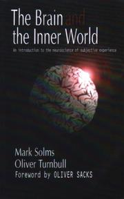

The Brain and the Inner World: An Introduction to the Neuroscience of Subjective Experience
Book·Mark Solms, Oliver Turnbull, 2002·脑与内在世界

A popular introduction to neuropsychoanalysis. It sets neuroscience findings on memory, emotion and dreams beside psychoanalytic concepts.
- Author
- Mark Solms, Oliver Turnbull
- Year
- 2002
- Difficulty
- Intermediate
- Kind
- Overview
- Schools
- Neuropsychoanalysis
- Core theories
- Dreaming and the Forebrain Mechanism
Editions
- English edition The Brain and the Inner World: An Introduction to the Neuroscience of Subjective Experience Mark Solms, Oliver Turnbull · Other Press, first edition · 2002 Open Library ↗